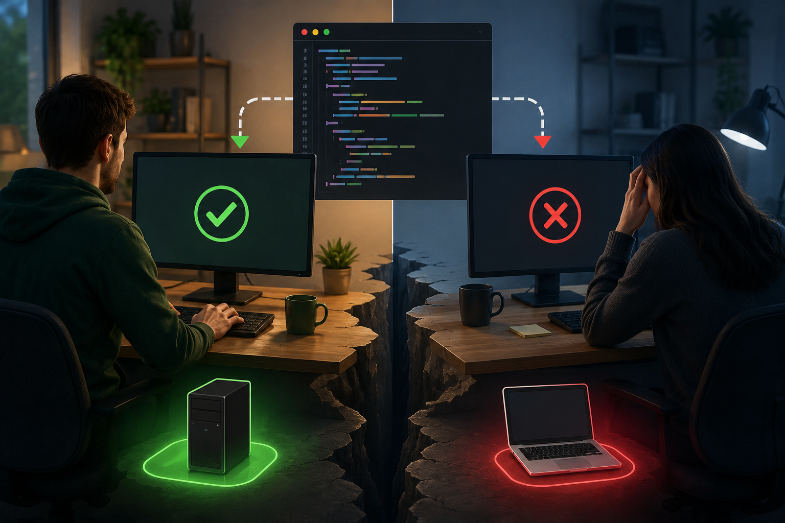

Reproducible development environments
Source code is only one input to a running program. The Python version, installed packages, system tools, files, configuration, and operating system all take part.

The “works on my machine” problem
Suppose a developer tests an application successfully and sends the source files to a teammate. The teammate has the same files, but the application fails. The files match; the two runs do not. They may use different versions of Python, different package releases, or different system commands.
We use environment for these surrounding runtime conditions. If a project does not record them, each developer reconstructs the setup from memory and from whatever software is available that day. The program can then behave differently even though nobody changed its source.
How this guide connects to the workshop
This pre-reading develops a general model: package ecosystems resolve dependencies, installed state must be separated from project descriptions, and different tools create different isolation boundaries. These ideas apply beyond Python and Docker.
The workshop will deliberately revisit the most important concepts through one concrete Python application. It will use a simple version-change story, inspect a real virtual environment, demonstrate the difference between a Python package and a system command, and build a container image. Those examples and commands are left to the workshop; the supporting model is developed here.
From an accidental setup to a recorded environment
- Understand what can vary. The runtime, dependencies, system software, paths, and configuration are all inputs to execution.
- Record Python package versions. A
requirements.txtfile can state which package release the application expects. - Separate Python projects. A virtual environment gives each project its own Python package location.
- Recognise system dependencies. Command-line tools and shared libraries belong to a different installation layer from Python packages.
- Package a larger environment. A container image can include the application, Python, Python packages, system packages, and a predictable internal filesystem.
What this pre-reading covers
This guide provides the background needed to reason about development environments; it is not a catalogue of every Docker feature or Python packaging tool. The workshop returns to the main ideas, demonstrates the commands, and applies them to the Week 6 project. Some supporting details appear only here.
Reproducibility begins by treating the environment as part of the software that developers must describe, inspect, and maintain.